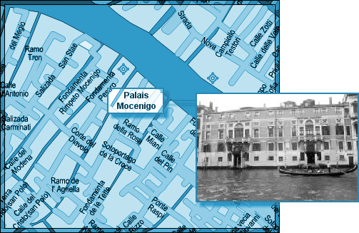
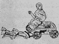

L'ICPA est une association privée créée par des amis et des collègues du journaliste Jack Lorski au lendemain de l'annonce de son meurtre en Écosse. Son seul but est d'aider les services de police et de justice internationaux à mettre fin le plus tôt possible aux agissements criminels du Phoenix.
SKL NETWORK est l'agence qui employait Jack Lorski. Elle a reçu et rendu public les deux CD-Roms envoyés par le Phoenix.
LIBERATION.FR a publié plusieurs articles sur l'affaire du Phoenix. Utilisez son moteur de recherches pour accéder à ses archives.
VICTIME N°11 : FRANCESCA BARTOLINI
- IDENTITÉ
Francesca Bartolini, célibataire de 34 ans, était animatrice culturelle à la mairie de Venise. Elle est devenue membre laïc de Manus Domini en 1999 après avoir participé à un stage de méditation dispensé par Georg Spielmann, président de l'Association du Levant. Cet organisme de formation situé dans le sud de la France semble avoir tissé des liens étroits avec la société secrète. Brigitte Carrera, la meilleure amie de Francesca, est toujours animatrice dans ce centre.
- PHOTO
- DATE ET LIEU DU CRIME
Francesca Bartolini a été tuée à Venise, le soir du 18 janvier 2003. Son corps a été retrouvé le lendemain devant les caves du palais Mocenigo. - AUTOPSIE
Francesca Bartolini a été étranglée. Un signe en forme de croissant de lune a été marqué au fer rouge sur son front. - ANALYSE
Francesca Bartolini est la onzième victime connue du Phoenix. Le tueur l'a d'abord choisie parce qu'elle était membre de Manus Domini, condition sine qua non de sa vengeance contre cette société secrète.
Afin de respecter son rituel lié au parcours européen de son maître à penser, Giordano Bruno, le Phoenix a également choisi Francesca Bartolini parce qu'elle était vénitienne. En effet, en 1591, un patricien vénitien, Giovanni Mocenigo, invite le philosophe italien à Venise pour qu'il lui enseigne l'art magique de la mnémotechnie. Hésitant, Bruno se rend finalement en Italie où il espère gagner la chaire de Mathématique à l'université de Padoue. Ses espoirs partent rapidement en fumée, c'est pourquoi il souhaite prendre congé de son hôte vénitien et repartir pour Francfort. Déçu de son enseignement et doutant de l'orthodoxie de Bruno, Mocenigo le dénonce alors à l'Inquisition. Le 23 mai 1592, Giordano Bruno est arrêté et transféré à la prison San Domenico di Castello.
Toujours en référence à son maître, le Phoenix a signé son crime en associant Francesca Bartolini à Luna (la Lune), le neuvième principe élémentaire de la magie brunienne (De imaginum idearum compositione, 1591) :Une ravissante jeune fille assise sur un char en ébène et recouvert en grande partie de feuille d'argent, sur lequel est dessiné un b½uf noir et une génisse blanche. - COMMENTAIRES DU PHOENIX
• « Une belle vénitienne… Ce soir là il y avait un clair de lune magnifique sur la lagune. »
• « Te voici arrivé au seuil de ton initiation, Poussin
Tu connais maintenant l'identité de Luna
J'avais entretenu une longue correspondance avec elle par Internet
Cette petite a été bien naïve d'accepter ce rendez-vous
Attirée par le mystère et par mon pouvoir de séduction
Sa curiosité n'a pas résistée très longtemps…
La pleine lune brillait ce soir là sur la lagune.
J'avais pris soin de neutraliser ce brave Jack et sa jolie compagne.
J'ai déposé son corps supplicié devant le Palais du traître. »
- LIENS
• Site de l'hôtel Mocenigo
• Site de l'Association du Levant
• Site de Brigitte Carrera